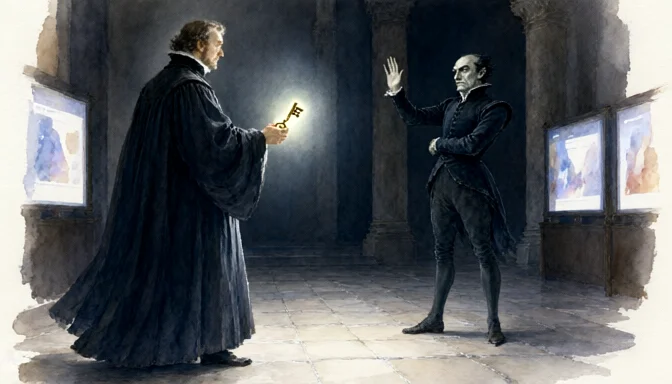

A quieter place to read.
Settle into a focused reader. Adjust the type and appearance, find a passage, and return to the place you left off.
For the love of getting lost in a book
Read the words. Hear the voices. Follow a question. See a scene come to life. A reading room for every kind of curiosity.
Poetry, plays, novels, and ideas. All in one place.

There’s more than one
way to turn a page.
Make yourself at home
Some passages ask to be heard. Some leave you with a question. Some put a picture in your head. Follow whichever thread catches you.
Settle into a focused reader. Adjust the type and appearance, find a passage, and return to the place you left off.
Choose a narration voice, follow the text as it plays, or hear a play performed with distinct character voices. Keep recordings to revisit.
Explore an image, untangle an argument, or talk through a character’s choice with an AI companion that has the text in context.
04 / IMAGINE
Turn a passage into an illustration. Go luminous with watercolor, dramatic with Caravaggio, or playfully mysterious with Scooby Doo. Add your own direction and character name labels.
Styles are chosen randomly from your selection, with no repeats within a batch. Save, download, and discuss what you see.
Find a scene in FaustGood company, great books
And room for your words, too. Paste a text into Miscellaneous to read, discuss, illustrate, or hear it aloud.
Yes. Browse the collections and read the text directly. Narration, AI discussion, and illustration are there when you choose to use them.
You can download generated images and saved recordings. The app also keeps a shared image library and saved recordings so you can return to them.
The reading room connects to configured model, image, and narration services. Availability depends on those services; some narration providers may charge for generation. AI interpretations can make mistakes, so keep the original text close.
Your next rabbit hole is waiting